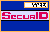

 SecurID
Authentication with a PINPAD
Follow this procedure
whenever you need to be authenticated:
- In the Enter Username field,
type the name that you use to log on to the system.
- Shield the LCD from view so that no
one can see your PIN as you enter it.
- Enter your PIN into the token and
press the diamond () near the
bottom of the token. The token now generates and displays
a PASSCODE with your PIN hidden in it. A small
number (a “1” on most tokens) on the right side
of the LCD will flash off and on when there is data
entered into it through the PINPAD.
- In the Enter PASSCODE field,
type the code currently displaying in your token.
- Click Send. If you have
entered a valid PASSCODE, you will be given access to the
protected resources.
- If the system displays Access
denied, you may have typed your PASSCODE
incorrectly. Wait until the tokencode changes in
the LCD of the token and try to log on
again.
- If you are repeatedly
denied access even though you are typing your
PASSCODE correctly, contact your security
administrator.
- As soon as your PASSCODE has been
accepted, press P to clear the PIN from your
token.
After a PIN is entered, the next several codes generated
are valid PASSCODEs. If someone were to obtain your token
while the PIN is in it, that person could use your token
to gain system access under your identity.
See Also: The "Next
Tokencode" Prompt